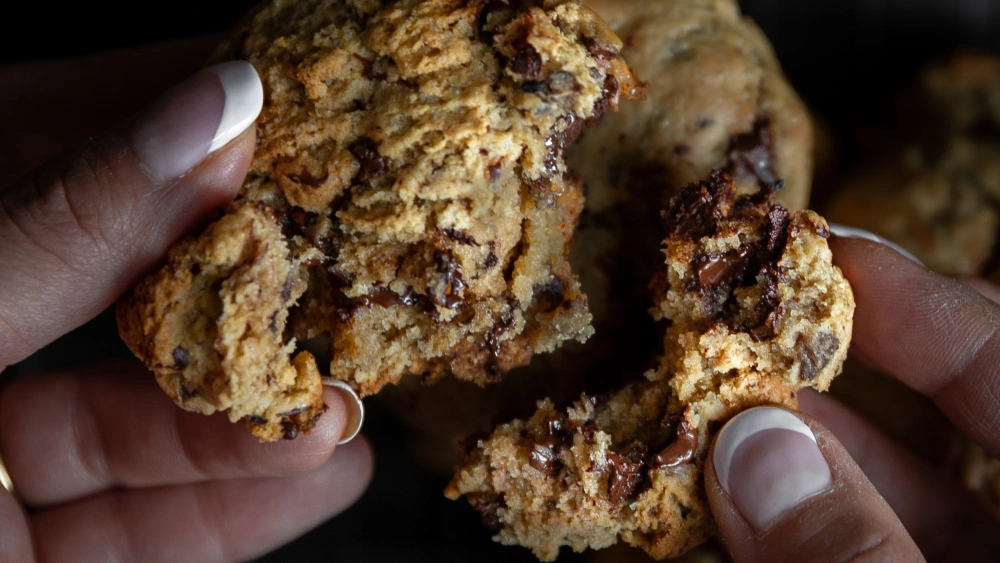

Paht Chocolate Chip Cookies

Chocolate chip cookies just got better!
Description
Joanne Lee Molinaro started her popular food blog, the Korean Vegan, 6 years ago. She is famous for creating vegan takes on traditional (and non-traditional) Korean food.
Chocolate chip cookies rank high on almost everyone's list of favorite foods, and for good reason! Adding sweet red bean paste elevates the already great treat to a chewier, lighter nirvana.
Ingredients
- 4 tablespoons (57g) vegan butter
- ¼ cup (50g) light brown sugar
- ½ cup (100g) cane sugar
- ½ cup (160g) paht
- 2 tablespoons plant milk
- 1 tablespoon vanilla extract
- 1¼ cups (315g) all-purpose flour
- 1 teaspoon baking soda
- ½ teaspoon salt
- 1 bar (1.7 oz/90g) dark chocolate, chopped into chunks
Steps
- Preheat the oven to 375°F. Line a baking sheet with parchment paper.
- In a stand mixer fitted with the paddle, beat together the vegan butter, brown sugar, cane sugar, red bean paste, plant milk, and vanilla on low speed until the ingredients are combined.
- In a separate bowl, whisk together the flour, baking soda, salt, and chocolate chunks. Slowly incorporate the dry ingredients to the wet ingredients using the stand mixer or a wooden spoon, until a dough forms.
- Using a large spoon or ice cream scoop, scoop out balls of dough (roughly the size of golf balls) and place on the prepared baking sheet. Using the back of a spoon, press down on them a little, as they will not “melt” the way normal cookies do.
- Transfer the baking sheet to the oven and bake for 11 minutes. The cookies will seem undercooked, but trust me. Cool the cookies on a wire rack for about 2 minutes before diving in.
Return to top
Return to previous page